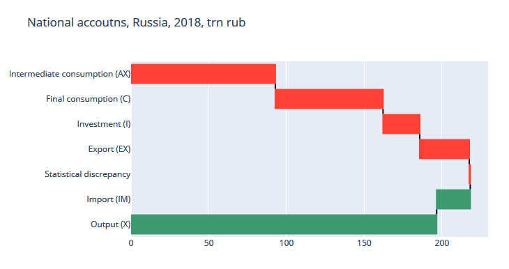

# System of national accounts (SNA)
This is an end-to-end example of national accounts sequence,
from output to net lending. It is based on Russian Federation data
for 2014-2018.
Below is a python session transcript with comments. You can fork [a github repo](https://github.com/epogrebnyak/sna-ru)
to replicate calculations.
## Chart
A short mnemonic chart to accompaign the calculations:
```
X -> GDP -> GNI -> GNDI = C + S (+ net capital transfers)
| |
Ch + I + Cg + NX S = I + Net lending
|
W + t' + P Always a mystery:
| S - I = NX = Net lending
X - AX
```
## Preparations
import pandas as pd
import handout`eq` function will check identities considering some rounding error.
def eq(df1, df2, precision=0.5) -> bool:
"""Compare two dataframes by element with precision margin."""
return ((df1 - df2).abs() < precision).all()Read dataset from file.
df = pd.read_csv("data/sna.csv", index_col=0)## 1. Output at market prices
Output at market prices is output at basic prices
plus tax on products less subsidy on products.
df["X"] = df.Xb + df.Tp - df.Sp## 2. Production of goods and services account
Output and import are resources,
consumption, investment (I) and export are uses.
Consumption is intermediate (AX) and final (C).
resources = df.X + df.IM
uses = df.AX + df.C + df.I + df.EXResources and uses are equal, controlling for
[statistical discrepancy](https://www.stat.fi/meta/kas/tilastollinen_e_en.html).
assert eq(resources, uses + df.desc)## 3. Gross domestic product (GDP)
There are three ways to calculate a GDP.
With some luck they yield to similar values.
gdp1 = df.X - df.AX
gdp2 = (df.C + df.I - df.IM) + df.EX + df.desc
gdp3 = df.W + df.Tf - df.Sf + df.GP
assert eq(gdp1, gdp2)
assert eq(gdp2, df.GDP)
assert eq(gdp3, df.GDP)```
>> gdp1.divide(10**6).round(1)
2014 79.1
2015 83.1
2016 86.0
2017 92.1
2018 103.9
```
## 4. Controlling for income and current transfers from abroad
Gross national income (GNI) is GDP and
net property and labor ("factor") income
form rest of the world (ROW).
gni = (
df.GDP
+ df.ROW_property_income_recieved
- df.ROW_property_income_paid
+ df.ROW_wage_net
)
assert eq(gni.iloc[1:,], df.GNI.iloc[1:,])Gross national disposable income (GNDI)
is GNI and net current transfers from abroad
gndi = gni + df.CT_recieved - df.CT_paid
assert eq(gndi, df.GNDI)## 5. Savings
Savings is gross domestic income
less household and government consumption.
S = gndi - (df.HH + df.G)
assert eq(df.C, df.HH + df.G)
assert eq(S, df.S)Investment is gross fixed capital formation
and change in inventories.
I = df.GFCF + df.inv
assert eq(I, df.I)## 6. Net lending
Net lending is S-I, and a balance of capital transfers
and a non-produced non-material asset aquisition (K.2).
NL = S + df.d9_recieved - df.d9_paid - I - df.k2
assert eq(NL, df.NL0)Net lending is an entry value into financial account (flow of funds).
Is usually contains a statistical error, later netted in flow of funds.
## Links
- [SNA 2008 manual](https://unstats.un.org/unsd/nationalaccount/docs/SNA2008.pdf)
- [Russian national accounts data](https://www.gks.ru/folder/210/document/13221)
- [Open economy identitites](https://github.com/hisamsabouni/macroLectures/blob/master/lecture_6.pdf)
